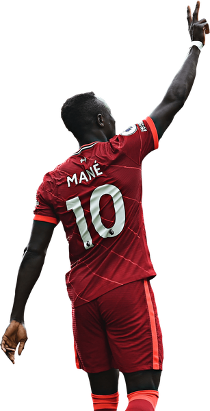
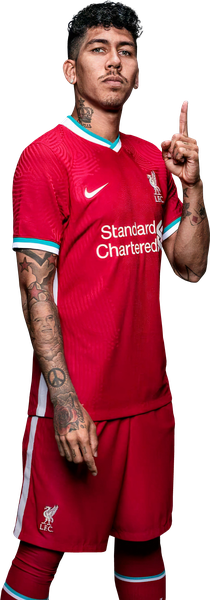
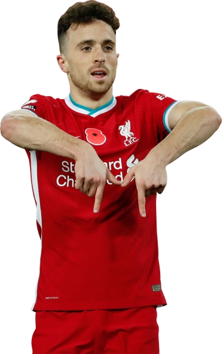
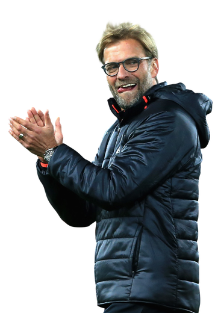

Quattro stagioni tra alti e bassi, che chiudono l'era di Jürgen Klopp.
Mercato: i rinforzi più importanti sono Luis Díaz, a gennaio 2022, Alexis Mac Allister e Dominik Szoboszlai, nell'estate 2023. Le partenze più pesanti sono quelle di Sadio Mané al Bayern Monaco nel 2022 e, nel 2023, di Roberto Firmino a parametro zero, di Jordan Henderson e Fabinho in Arabia Saudita.

Champions League
Nessuna vittoria
Miglior risultato:
Finalista (2021/22)

Supercoppa UEFA
Non partecipante

Mondiale per Club
Non partecipante

Premier League
Nessuna vittoria
Miglior risultato:
2º posto (2021/22)

FA Cup
Vinta x1
(2021/22)

Carabao Cup
Vinta x2
(2021/22 - 2023/24)

Community Shield
Vinta x1
(2022/23)
Sito realizzato per l'esame di Reti di Calcolatori e Principi di Cybersecurity - Università di Trieste
Foto della Champions League e della FA Cup: Wikimedia Commons.
Marco Barsoum -